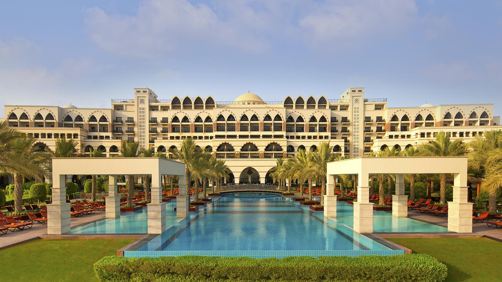
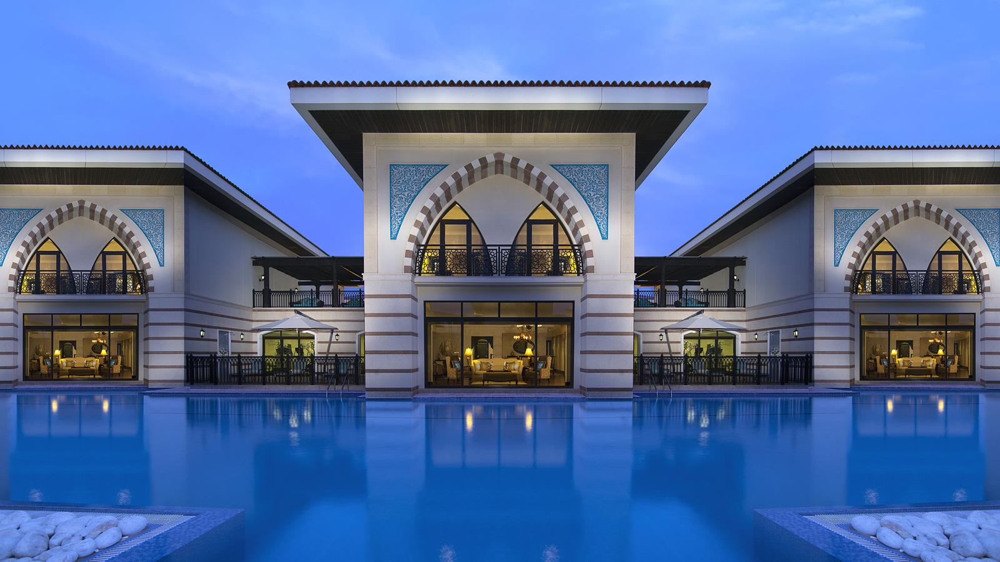
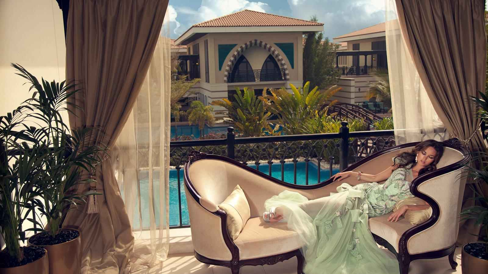
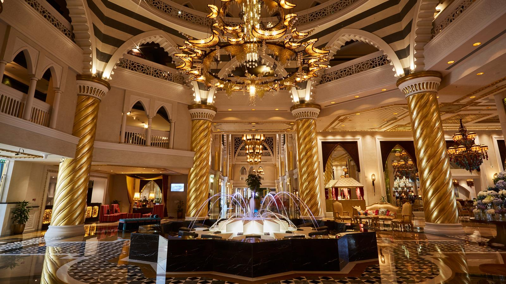
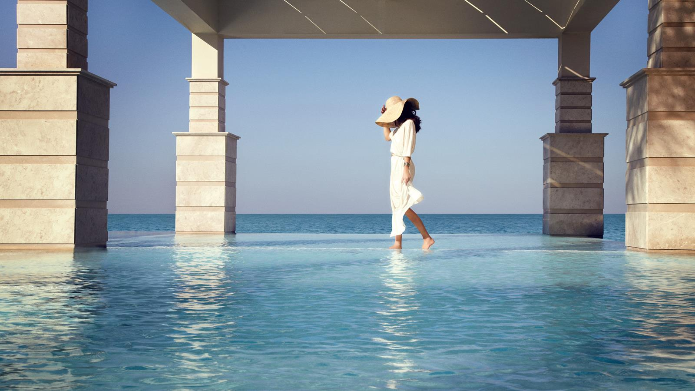
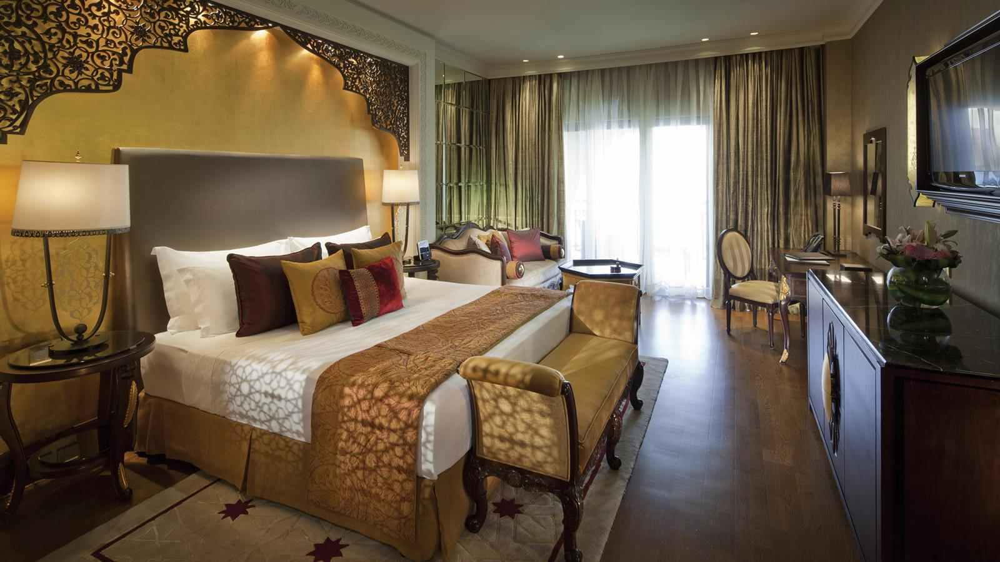
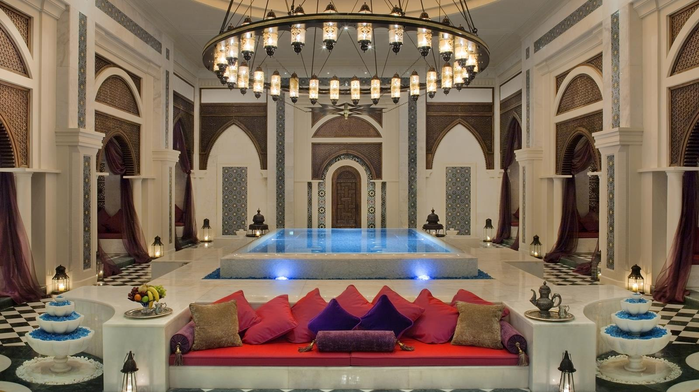

<div class="container project-view">
    
	<div class="row">
        <div class="col-md-8 project-images">
            
            
            
            
            
            
            
		</div>
        <div class="col-md-4">
            <div class="project-info">
                <h2>Jumeirah zabeel saray</h2>

                <div class="details">
                    <!-- <div class="info-text">
                        <span class="title">Date</span>
                        <span class="val">March 2014</span>
                    </div> -->

                    <div class="info-text">
                        <span class="title">Location</span>
                        <span class="val">Dubai</span>
                    </div>

                    <div class="info-text">
                        <span class="title">Category</span>
                        <span class="val">Luxury Wedding</span>
                    </div>
                </div>

					Jumeirah Zabeel Saray, an iconic destination nestled on the quiet, pristine West Crescent of Dubai’s Palm Jumeirah, stands as an ode to the excellence of the Ottoman era. Inspired by the historic Turkish empire, the exquisitely done interiors of our 379 elegant guest rooms, 26 lavish suites, and 38 Royal Residences are a testimony to the magnificence of the golden Tulip era.
					<br/><br/>
					From carefully hand-painted interiors and stunning unrivalled views of the Arabian Gulf, guests indulge their senses within the resort, and beyond. Flanked by stunning views of the Arabian Gulf and Dubai’s skyline, you are in for a visual treat in more ways than one.  Whether it’s swimming into infinite bliss at the infinity pool, taking a relaxing walk along our pristine private beach, exploring a journey of culinary offerings in our award-winning restaurants, or facilities, leave the hustle behind, and walk in to a world of endless leisure because The World Can Wait. 

            </div>
        </div>
    </div>
</div>